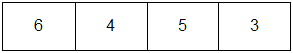
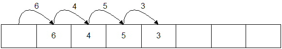
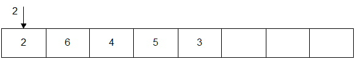

- You are given the header file Vector.h (HTML)
to start with, and a partial implementation in Vector.cpp
(HTML)
to help get you started. There are 11 public methods so far, and 9 of them are trivial.
(I've implemented 6 of them for you.)
The ones
in blue have already been implemented for you.
(You're welcome!).
- Default constructor
- Destructor
- clear
- operator[] (non-const)
- operator[] (const)
- empty
- size
- capacity
- allocations
You'll need about 10 lines of code (total) to implement the remaining 4 functions above. The remaining 2 public methods are a little more involved:
- push_front - You need to shift all elements over one position. If the array is full, you must grow it first.
- push_back - No shifting, but if the array is full, you will need to grow the array first.
- Your task is to implement all of the methods that are defined in the header file. There are some private fields already defined, and you shouldn't need any others. There are also some simple methods already implemented.
- Start with the push_back method and try to pass the first test. Once you get push_back working, the rest will come pretty quickly.
- Probably, the most difficult method at this point is the private grow method. push_back calls this method, so you will need to implement it to get push_back to work.
- Growing a vector/array simply means allocating another array that is twice the size of the original array, copying the elements from the orginal array into the new array, and then deleting the original array.
- The subscript operators should call check_bounds before returning the item. The reason you aren't checking in the subscript operator is code-reuse. There will be several other places you'll need to check the bounds and you don't want to duplicate this code every where. This is especially important when we change the behavior of the check_bounds function: You don't want to change it in mulitple places.
Growing a vector: (Requires about 10 lines of code.)
- Original vector:

- After growing (allocate another array that is twice as large):
- Copy existing elements from original array into new array using a loop of some kind.
Do not use memcpy or anything like that. If you don't understand why
that is, then you DEFINITELY should not use it!

- Don't forget: Free the memory from the original array or you'll have a memory leak.
Pushing to the front: Example: push_front(2);
- Original vector:
- Copy all elements to the right one slot starting with the right-most element first:

- Put the value in the open slot:

- Make sure there is enough room in the array before shifting all of the elements.
You may have to grow the array first.
Hint: You might want to make a private helper function that shifts elements. This will make push_front (and other methods to come) simpler.
Here is some test code in driver.cpp (HTML). Command lines:
GNU g++:
g++ -o gnu -O2 -Wconversion -Wall -Wextra -Werror -ansi -pedantic driver.cpp Vector.cpp
To run a single test, provide the number on the command line. Example:
will run test #5 (calls the TestALot1 function). If you don't provide any number, all tests will be run.gnu 5
Output from all functionsDon't forget to add --strip-trailing-cr to the diff program to ignore the newlines between GNU's output and the other compilers.